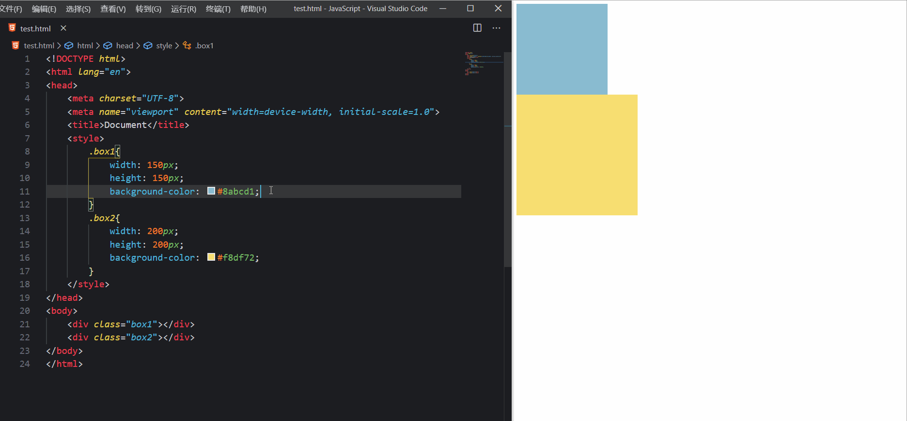
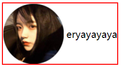

BFC
在解释BFC之前，先说一下文档流。我们常说的文档流其实分为定位流、浮动流、普通流三种。而普通流其实就是指BFC中的FC。FC(Formatting Context)，直译过来是格式化上下文，它是页面中的一块渲染区域，有一套渲染规则，决定了其子元素如何布局，以及和其他元素之间的关系和作用。常见的FC有BFC、IFC，还有GFC和FFC。
BFC(Block Formatting Context)块级格式化上下文，是用于布局块级盒子的一块渲染区域。MDN上的解释：BFC是Web页面 CSS 视觉渲染的一部分，用于决定块盒子的布局及浮动相互影响范围的一个区域。
注意：一个BFC的范围包含创建该上下文元素的所有子元素，但不包括创建了新BFC的子元素的内部元素。这从另一方角度说明，一个元素不能同时存在于两个BFC中。因为如果一个元素能够同时处于两个BFC中，那么就意味着这个元素能与两个BFC中的元素发生作用，就违反了BFC的隔离作用。
形成BFC的条件
1、根元素，即HTML元素
1、浮动元素，float 除 none 以外的值；
2、定位元素，position（absolute，fixed）；
3、display 为以下其中之一的值 inline-block，table-cell，table-caption；
4、overflow 除了 visible 以外的值（hidden，auto，scroll）；
BFC布局规则
1.内部的Box会在垂直方向，一个接一个地放置。
2.Box垂直方向的距离由margin决定。属于同一个BFC的两个相邻Box的margin会发生重叠
3.每个元素的margin box的左边， 与包含块border box的左边相接触(对于从左往右的格式化，否则相反)。即使存在浮动也是如此。
4.BFC的区域不会与float box重叠。
5.BFC就是页面上的一个隔离的独立容器，容器里面的子元素不会影响到外面的元素。反之也如此。
6.计算BFC的高度时，浮动元素也参与计算
BFC可以解决哪些问题？
解决浮动元素令父元素高度坍塌的问题
方法：给父元素开启BFC
原理：计算BFC的高度时，浮动子元素也参与计算

非浮动元素被浮动元素覆盖
方法：给非浮动元素开启BFC
原理：BFC的区域不会与float box重叠

两栏自适应布局
方法：给固定栏设置固定宽度，给不固定栏开启BFC。
原理：BFC的区域不会与float box重叠

外边距垂直方向重合的问题
方法：给上box或者下box任意一个包裹新的box并开启BFC
原理：属于同一个BFC的两个相邻的Box的margin会发生重叠。

IFC
内联格式化上下文，是用于 布局内联元素 盒子的一块 渲染区域。
IFC的形成条件
块级元素中仅包含内联级别元素
IFC的布局规则
盒是从包含块的顶部开始一个挨一个水平放置的
水平padding、border、margin都有效，垂直方向上不被计算。
在垂直方向上，子元素会以不同形式来对齐vertical-align
能把在一行上的框都完全包含进去的一个矩形区域，被称为该行的行框（line box）。行框的宽度是由包含块（containing box）和与其中的浮动来决定。
IFC中的“line box”一般左右边贴紧其包含块，但float元素会优先排列。
IFC中的“line box”高度由 CSS 行高计算规则来确定，同个IFC下的多个line box高度可能会不同。
当 inline-level boxes的总宽度少于包含它们的line box时，其水平渲染规则由text-align 属性值来决定。
当一个“inline box”超过父元素的宽度时，它会被分割成多个boxes，这些 boxes 分布在多个“line box”中。如果子元素未设置强制换行的情况下，“inline box”将不可被分割，将会溢出父元素。
实例
元素垂直居中
布局规则第3条：在垂直方向上，子元素会以不同形式来对齐vertical-align

想要实现文字与图片垂直居中，只要给图片加上一个vertical-align: middle 属性就可以实现：
